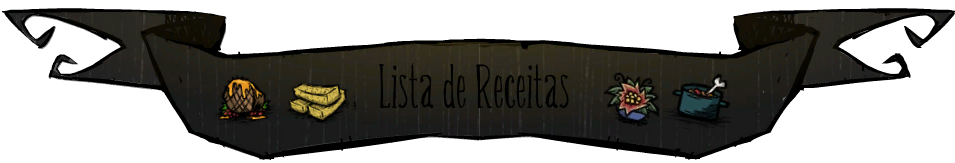

Bem, agora que você possui uma panela( ) na sua base, talvez seja bom entender sobre a mecânica de cozinha do jogo e algumas receitas importantes(). Utilizar a panela() ao invés de comer os ingredientes (
) na sua base, talvez seja bom entender sobre a mecânica de cozinha do jogo e algumas receitas importantes(). Utilizar a panela() ao invés de comer os ingredientes (

 ) costuma a dar mais status e é possivel “restaurar” a validade da comida. Mesmo ao cozinhar com ingredientes prestes a estragar, a receita sempre estará com qualidade fresca, não tão fresca quando se usa ingredientes frescos mas fresca o suficiente para comer sem penalidades.
) costuma a dar mais status e é possivel “restaurar” a validade da comida. Mesmo ao cozinhar com ingredientes prestes a estragar, a receita sempre estará com qualidade fresca, não tão fresca quando se usa ingredientes frescos mas fresca o suficiente para comer sem penalidades.
As comidas em Don't Starve são classificadas em valores e tipos de ingrediente. Por exemplo () conta como 0.5 de peixe e 0.5 de carne e () conta como 0.5 de fruta. Aqui esta a lista de valores de alguns ingredientes:
Carne obtida de monstros! Naturalmente tóxica quando crua() ou cozinhada( ) sobre o fogo(
) sobre o fogo( ) mas podem ser utilizada em receitas de panela() caso não abuse da quantidade de carne de monstro. Caso uma receita tenha valor de monstro >=2, então o resultado será () uma receita ainda mais tóxica do que os ingredientes usados. Lembrando que cada ( ) = 1 valor de monstro. Há exceções onde utilizar 2 () não resultara em () caso a outra receita(exemplo:
) mas podem ser utilizada em receitas de panela() caso não abuse da quantidade de carne de monstro. Caso uma receita tenha valor de monstro >=2, então o resultado será () uma receita ainda mais tóxica do que os ingredientes usados. Lembrando que cada ( ) = 1 valor de monstro. Há exceções onde utilizar 2 () não resultara em () caso a outra receita(exemplo:  ) tenha prioridade sobre a lasanha monstruosa.
) tenha prioridade sobre a lasanha monstruosa.
A maioria das receitas não exige exatamente 4 ingredientes (que é a capacidade máxima da panela) porém so é possível cozinhar se os 4 slots (espaços) estiverem ocupados, então utilizamos qualquer ingrediente que não quebre a regra da receita. Vale lembrar que há ingredientes que não são "categorizados" como os valores mencionados acima mas podem ser inseridos na panela para preencher espaço, um muito fácil de se obter é o gelo( ). Durante o inverno qualquer pedaço de carne(
). Durante o inverno qualquer pedaço de carne( ) e 3 gelos() pode suprir sua fome eternamente()!
) e 3 gelos() pode suprir sua fome eternamente()!
Por exemplo : () possui a seguinte receita : “Carne > 0". Ou seja qualquer pedaço de carne() e você tem uma almôndega quase pronta, porém ainda é necessário preencher os outros 3 slots da panela. Se por acaso preenchermos os espaços restantes com 1 carne grande() e 2 cenouras() ao invés de recebermos (), receberemos 1 () pois a receita de () exige Carne = 1.5 e Vegetais >= 1.5. Se por acaso quisermos cozinhar () e não () então temos que preencher com outros ingredientes que não entre nos requesitos de uma outra receita e que não quebre os requesitos dela própria.

Com cerca de 58 receitas no jogo com diferente combinações, não é fácil memorizar todas como também não são todas que possuem um custo-benefício nutritivo quando comparado a soma dos ingredientes. Então irei destacar algumas receitas fáceis com custo-benefício :